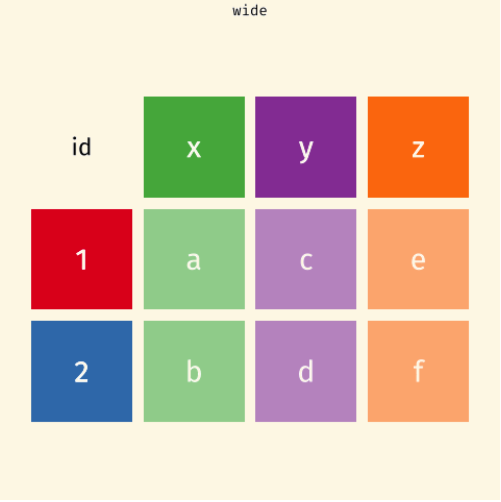
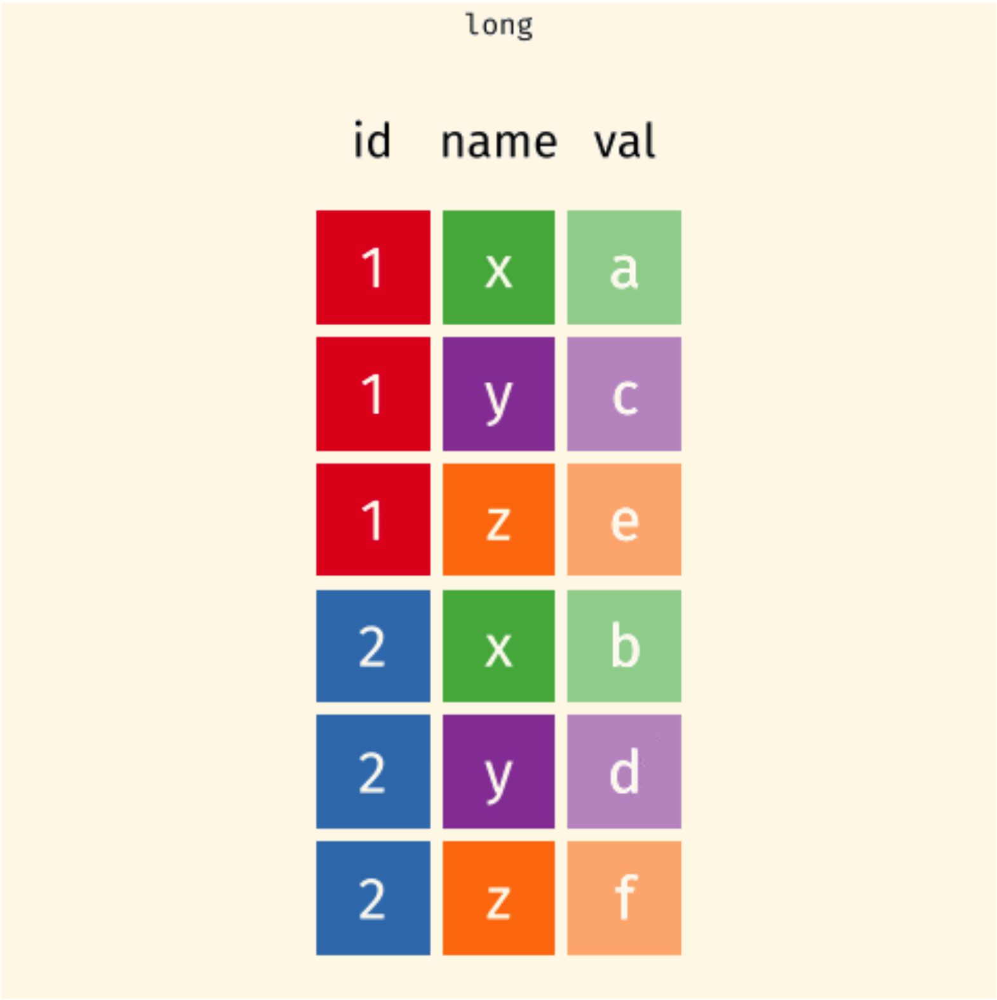

Tidying Data 🧹
MATH/COSC 3570 Introduction to Data Science
Dr. Cheng-Han Yu
Department of Mathematical and Statistical Sciences
Marquette University
Department of Mathematical and Statistical Sciences
Marquette University
Grammar of Data Tidying
Grammar of Data Tidying
- Have data organised in an unideal way for our analysis
- Want to re-organise the data to carry on with our analysis
The goal of tidyr is to help you tidy your data via
- pivoting for going between wider and longer data
- separating and uniting character columns
- clarifying how
NAs should be treated - nesting and unnesting columns
Pivoting
- To tidy your data,
- first, figure out what the (column) variables and (row) observations are
- second is to resolve one of two common problems:
- One (column) variable might be spread across multiple columns.
- One (row) observation might be scattered across multiple rows.
wider (\(2 \times 4\))
more columns
longer (\(6 \times 3\))
more rows by pivot_longer()
# A tibble: 6 × 3
customer_id item_no item
<dbl> <chr> <chr>
1 1 item_1 bread
2 1 item_2 milk
3 1 item_3 banana
4 2 item_1 milk
5 2 item_2 toilet paper
6 2 item_3 <NA>
pivot_longer() and pivot_wider()
To fix these problems, we’ll need
pivot_longer()andpivot_wider()-
Starts with a data set,
-
pivot_longer()add more rows and decreases the number of columns. -
pivot_wider()add more columns and decreases the number of rows.
-
pivot_longer() and pivot_wider()
One variable spreads across multiple columns

One subject is scattered across multiple rows

pivot_longer() and pivot_wider()

Data: sales/customers.csv
wider (\(2 \times 4\))
more columns
longer (\(6 \times 3\))
more rows by pivot_longer()
# A tibble: 6 × 3
customer_id item_no item
<dbl> <chr> <chr>
1 1 item_1 bread
2 1 item_2 milk
3 1 item_3 banana
4 2 item_1 milk
5 2 item_2 toilet paper
6 2 item_3 <NA> pivot_longer()
pivot_longer()
pivot_longer()
pivot_longer()
data: data framecols: columns to pivot into longer formatnames_to: name of the column where column names of pivoted variables go (character string)values_to: name of the column where data values in pivoted variables go (character string)
customers \(\rightarrow\) purchases
# A tibble: 2 × 4
customer_id item_1 item_2 item_3
<dbl> <chr> <chr> <chr>
1 1 bread milk banana
2 2 milk toilet paper <NA> # A tibble: 6 × 3
customer_id item_no item
<dbl> <chr> <chr>
1 1 item_1 bread
2 1 item_2 milk
3 1 item_3 banana
4 2 item_1 milk
5 2 item_2 toilet paper
6 2 item_3 <NA> In customers data,
Names item_1, item_2, item_3 are values of variable
item_noinpurchasesValues bread, milk, etc are values of variable
iteminpurchases
Why Pivot?
- The next step of your analysis needs it.
- The new
purchasesdata set and thepricesdata can now be joined together with the common key variableitem.
purchases \(\rightarrow\) customers
-
data: data frame -
names_from: which column variable in the long format contains the what should be column names in the wide format -
values_from: which column variable in the long format contains the what should be (cell) values in the new columns in the wide format
# A tibble: 6 × 3
customer_id item_no item
<dbl> <chr> <chr>
1 1 item_1 bread
2 1 item_2 milk
3 1 item_3 banana
4 2 item_1 milk
5 2 item_2 toilet paper
6 2 item_3 <NA> # A tibble: 2 × 4
customer_id item_1 item_2 item_3
<dbl> <chr> <chr> <chr>
1 1 bread milk banana
2 2 milk toilet paper <NA> separate()
-
separate()pulls apart one column into multiple ones, by splitting wherever a separator character appears. - By default
separate()splits values wherever it sees a character that isn’t a number or letter.
# A tibble: 6 × 4
country year cases population
<chr> <dbl> <chr> <chr>
1 Afghanistan 1999 745 19987071
2 Afghanistan 2000 2666 20595360
3 Brazil 1999 37737 172006362
4 Brazil 2000 80488 174504898
5 China 1999 212258 1272915272
6 China 2000 213766 1280428583separate()
## explicitly specify separator
table3 |>
separate(
rate,
into = c("cases", "population"),
sep = "/"
)# A tibble: 6 × 4
country year cases population
<chr> <dbl> <chr> <chr>
1 Afghanistan 1999 745 19987071
2 Afghanistan 2000 2666 20595360
3 Brazil 1999 37737 172006362
4 Brazil 2000 80488 174504898
5 China 1999 212258 1272915272
6 China 2000 213766 1280428583## convert to better data types (chr to int)
table3 |>
separate(
rate,
into = c("cases", "population"),
convert = TRUE
)# A tibble: 6 × 4
country year cases population
<chr> <dbl> <int> <int>
1 Afghanistan 1999 745 19987071
2 Afghanistan 2000 2666 20595360
3 Brazil 1999 37737 172006362
4 Brazil 2000 80488 174504898
5 China 1999 212258 1272915272
6 China 2000 213766 1280428583unite()
-
unite()is the inverse ofseparate(): it combines multiple columns into a single column.
# A tibble: 6 × 3
country long_year rate
<chr> <chr> <chr>
1 Afghanistan 19_99 745/19987071
2 Afghanistan 20_00 2666/20595360
3 Brazil 19_99 37737/172006362
4 Brazil 20_00 80488/174504898
5 China 19_99 212258/1272915272
6 China 20_00 213766/1280428583unite()
-
unite()is the inverse ofseparate(): it combines multiple columns into a single column.
# A tibble: 6 × 3
country long_year rate
<chr> <chr> <chr>
1 Afghanistan 19*99 745/19987071
2 Afghanistan 20*00 2666/20595360
3 Brazil 19*99 37737/172006362
4 Brazil 20*00 80488/174504898
5 China 19*99 212258/1272915272
6 China 20*00 213766/1280428583# A tibble: 6 × 3
country long_year rate
<chr> <chr> <chr>
1 Afghanistan 1999 745/19987071
2 Afghanistan 2000 2666/20595360
3 Brazil 1999 37737/172006362
4 Brazil 2000 80488/174504898
5 China 1999 212258/1272915272
6 China 2000 213766/1280428583Missing Values
-
Explicitly: flagged with
NAor other character/string representing a missing value. - Implicitly: simply not present in the data.
(stocks <- tibble(yr = c(2015, 2015, 2015, 2015, 2016, 2016, 2016),
qtr = c( 1, 2, 3, 4, 2, 3, 4),
ret = c(1.88, 0.59, 0.35, NA, 0.92, 0.17, 2.66)))# A tibble: 7 × 3
yr qtr ret
<dbl> <dbl> <dbl>
1 2015 1 1.88
2 2015 2 0.59
3 2015 3 0.35
4 2015 4 NA
5 2016 2 0.92
6 2016 3 0.17
7 2016 4 2.66- Row 4: The stock return for the 4th quarter of 2015 is explicitly missing
- Row 5: The stock return for the 1st quarter of 2016 is implicitly missing
pivot_wider() Make Implicit Values Explicit
An explicit missing value is the presence of an absence.
An implicit missing value is the absence of a presence.
complete(): Making Missing Values Explicit
fill(): Fill in Missing Values
fill() will find the most recent or the last observation that is not a missing value.

17-tidyr (Present your work!)
In lab.qmd ## Lab 17 section,
Import
trump.csv. Call ittrump_dataas below on the left.Use
pivot_longer()to transformtrump_datainto the data settrump_longeron the right.
# A tibble: 5,404 × 4
subgroup date rating_type rating_value
<chr> <date> <chr> <dbl>
1 Voters 2020-10-04 approval 44.7
2 Voters 2020-10-04 disapproval 52.2
3 Adults 2020-10-04 approval 43.2
4 Adults 2020-10-04 disapproval 52.6
5 Adults 2020-10-03 approval 43.2
6 Adults 2020-10-03 disapproval 52.6
# ℹ 5,398 more rowsBONUS 🤑: Use trump_longer to generate a plot like the one below.

Pivoting
pd.wide_to_long()
pd.pivot()
pd.wide_to_long()
pd.pivot()
customer_id item_no item
0 1 1 bread
1 2 1 milk
2 1 2 milk
3 2 2 toilet paper
4 1 3 banana
5 2 3 NaNitem_no 1 2 3
customer_id
1 bread milk banana
2 milk toilet paper NaN